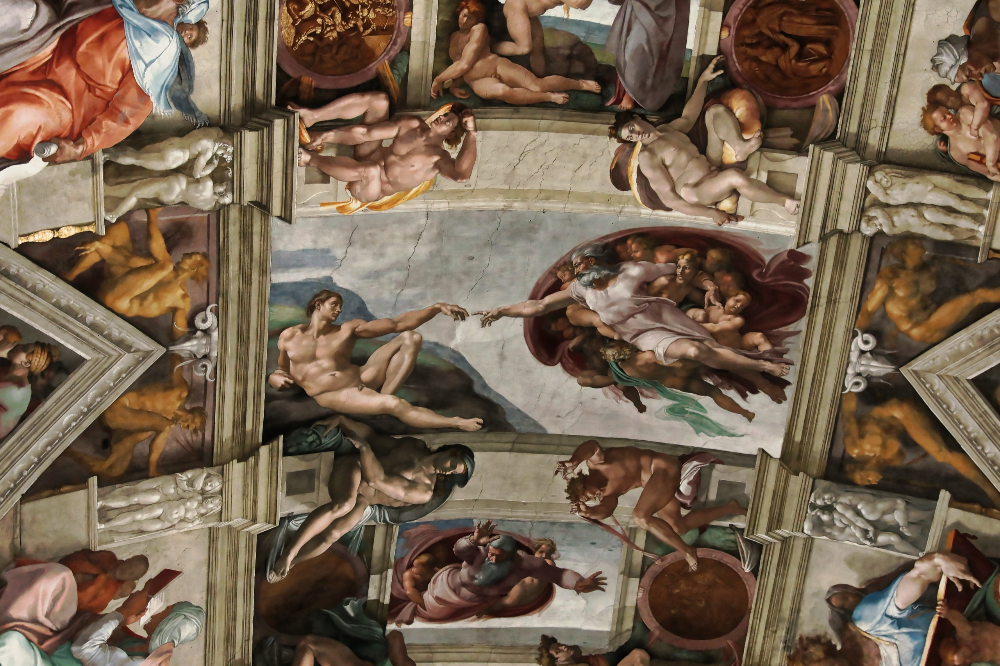

Génesis · Obra 01 de 47
La Creación de Adán
Miguel Ángel Buonarroti (1512)

.jpg){kind=link}
El espacio milimétrico entre los dedos captura la tensión del momento previo a la chispa de la conciencia. El manto divino representa la sección de un cerebro humano.
Lo que hace que destaque
El espacio infinitesimal entre los dedos de Dios y Adán representa el momento supremo del arte occidental: la transmisión de la chispa del ánima (alma espiritual e intelecto humano). Adán yace recostado pasivamente en una meseta terrenal desnuda, encarnando la materia inerte a la espera del soplo divino. Dios el Padre, caracterizado como un anciano majestuoso de barba plateada pero de musculatura sobrehumana, avanza envuelto en un gran manto carmesí impulsado por ángeles celestiales.
Contexto histórico
Un descubrimiento neuroanatómico contemporáneo destaca que el manto rojo divino posee la forma exacta de una sección sagital del encéfalo humano (mostrando el lóbulo frontal, el quiasma óptico y la arteria basilar). La figura femenina bajo el brazo izquierdo de Dios ha sido identificada como Eva esperando en la mente divina antes de su creación o como María con el Niño Jesús. Los dos dedos jamás se tocan, simbolizando la distancia insuperable entre el Creador trascendente y la criatura mortal.
Biografía del artista
Miguel Ángel Buonarroti (1475–1564) se consideraba a sí mismo primordialmente un escultor. Aceptó a regañadientes el encargo de pintar el techo de la Capilla Sixtina hecho por el Papa Julio II en 1508. Trabajando suspendido en andamios de madera que él mismo diseñó, pintó más de 500 metros cuadrados durante cuatro años de agotamiento físico continuo, transformando la anatomía del cuerpo humano en el lenguaje supremo de la teología y la belleza.
Otras vistas
